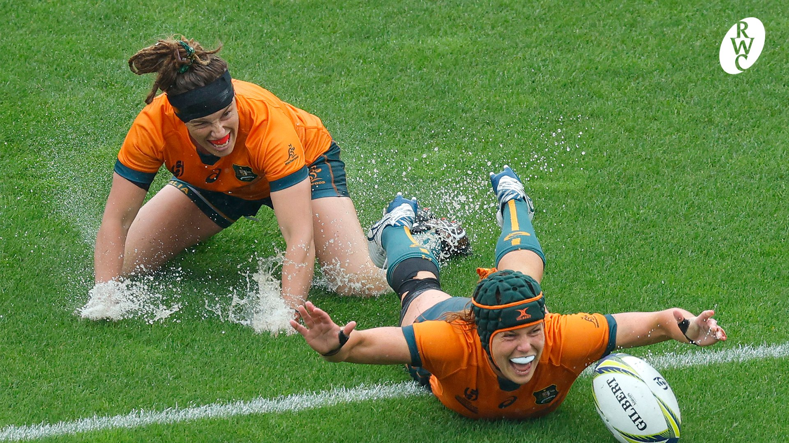
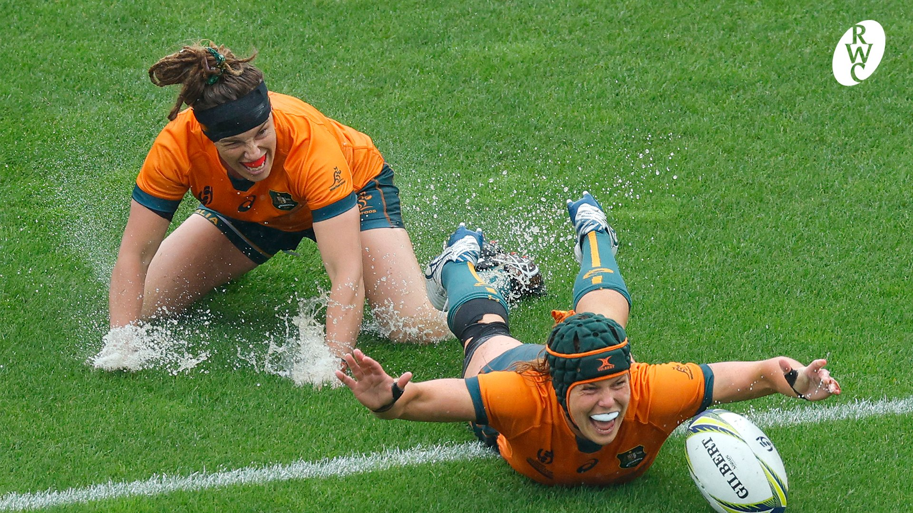
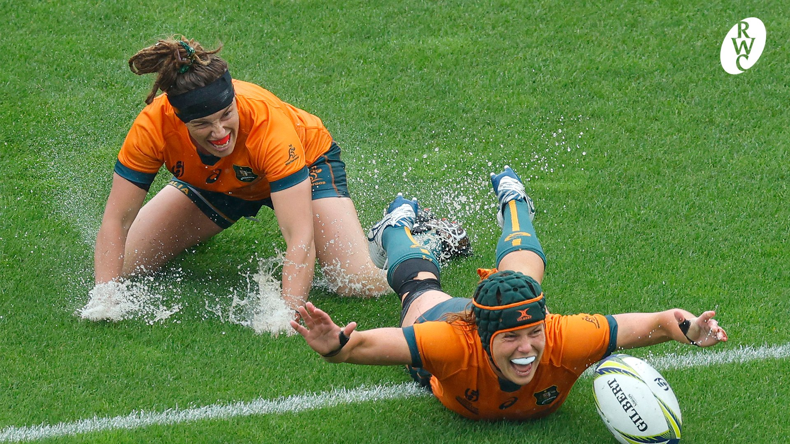

⬆

Реґбі (англ. rugby football) — олімпійський вид спорту, спортивна командна гра, в яку грають на прямокутному полі м'ячем овальної форми, різновид футболу.
Метою гри є приземлення м'яча у заліковому полі (місті) або ж забиття його ногою над перекладиною воріт у межах, позначених двома стійками.
У реґбі грають руками й ногами. При грі руками заборонено передавати м'яч вперед. Ногами м'яч бити вперед можна.
При виході м'яча з гри за бічну лінію його вкидають у коридор, який формується із гравців обох команд.
При грі вперед та інших дрібних порушеннях у основному виді регбі (регбі-15) призначається сутичка, в якій м'яч вкидається між двома групами із восьми гравців, і ті намагаються вибороти його, відштовхуючи групу супротивника.
При серйозніших порушеннях (наприклад, офсайді) призначаються карні удари. Особливо груба гра карається вилученням на десять хвилин (жовта картка) чи з гри (червона картка). У найпоширенішому варіанті (регбі-15) гра складається із двох таймів тривалістю 40 хвилин кожен. Проте, після того, як час тайму вибіг, боротьба не припиняється, доки м'яч не вийде з гри.
« Залікові очки» В основному виді регбі (регбі-15, регбі-юніон) за приземлення м'яча в місті супротивника дається 5 очок й право на спробу реалізації. При успішній реалізації дається ще два очки. За влучне пробиття карного удару дається 3 очки. Те ж саме стосується влучного удару з відскоку від землі (дроп-голу). У регбі-13 за приземлення м'яча в заліковому полі команда отримує 4 очки і право на спробу реалізації. За успішну реалізацію команда отримує ще два очки.
М'яч для регбі
Ігрове поле